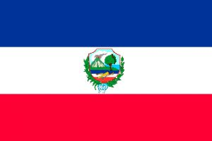
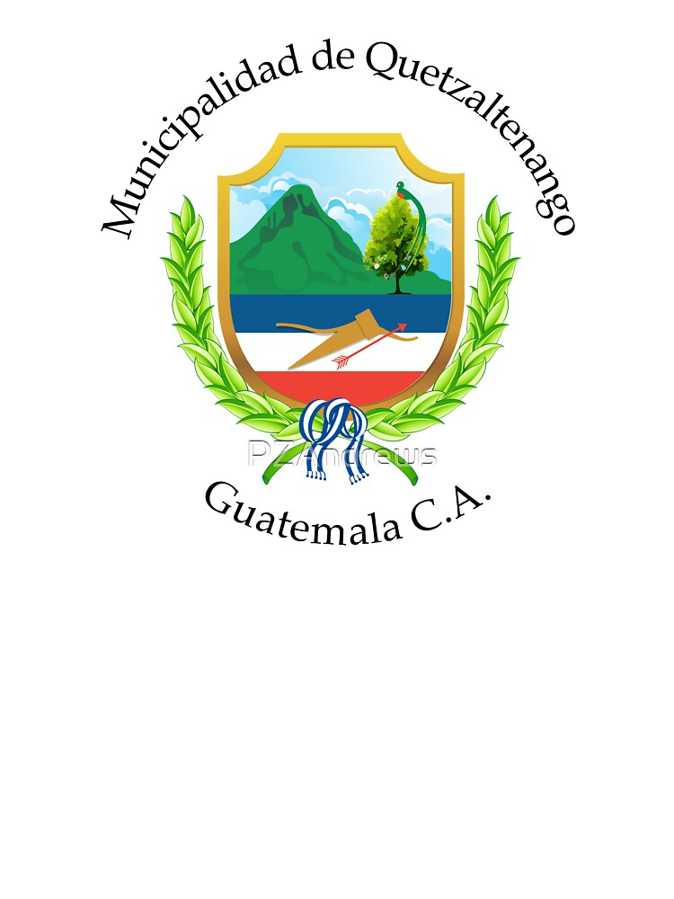

Bandera y Escudo
El escudo del Departamento de Quetzaltenango es un blasón dividido en dos campo en el cual se ubican los elementos principales del departamento. ... Por último, a los lados del escudo se encuentran dos ramas una de laurel y otra de olivo entrelazadas de por una cinta de color azul y blanco.

